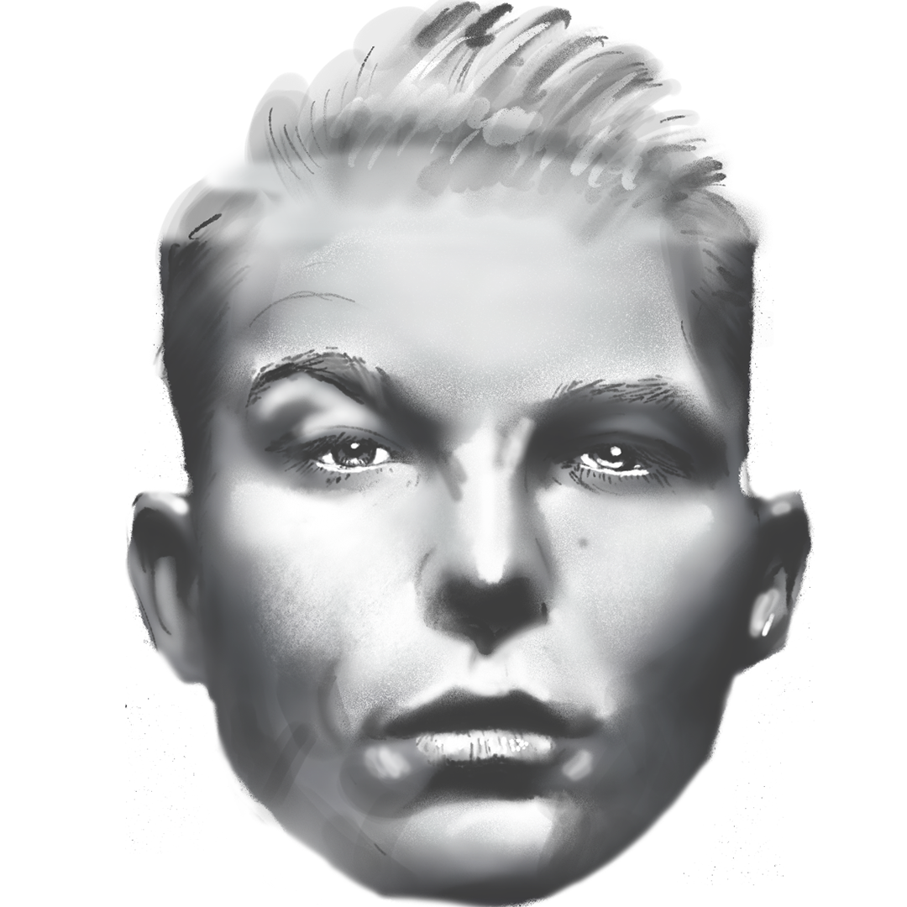

Curvatogram
tool
by
Jussi Jokinen
Fork on GitHub
SHIFT + click = override block settings.
Grid size
Line count
Darkness
Line width
Resolution

Export as SVG
Drag'n drop a custom source image (png/jpg).
Use a square image, about 1000 x 1000 px.
Drop image here.